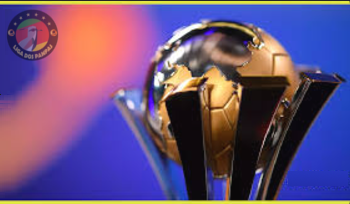
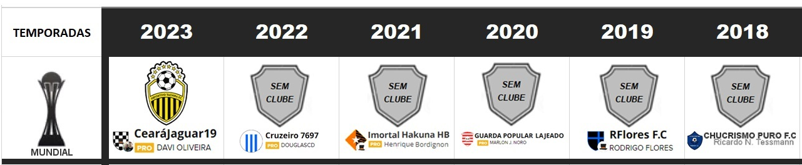

Campeonato de Cartola
A vitória no cartola é o sucesso do seu time!

Redação Cartola - 22/11/2024 - 6h54min 
Novidades da sétima edição do Mundial de cartola (a segunda na modalidade técnico de clubes) tras como principais atrativos a adoção da fase de mata-mata a partir das "oitavas" e inclusão do campeão e vice da Champeons League.
Edição deste ano passa a contar com a fórmula inspirada naquela que a FIFA se utiliza no mundial de clubes de futebol. Na primeira fase, oito clubes participam de um mata-mata de jogo único. Dentre eles, teremos a Juventus de Turim do "Palestra Fox", que obteve classificação a partir do vice-campeonato da Champions League, enquanto o Ajax do "UGÂO F.C", campeão da Champions, e o futuro campeão da Copa Libertadores ingressarão a partir das semifinais.
Além de Ajax, Juventus e o futuro campeão da Libertadores como favoritos naturais ao título, há outros clubes que chegarão turbinados por força da qualidade dos cartoleiros que atuarão na função de treinadores. É o caso do Pachuca do México, que contará com o atual campeão da liga de Rio Claro (2023), além do Leverkusen, a ser defendido pelo professor "Sellegalo F.C", sensação vinda de empréstimo do Bragantino, clube finalista da Copa Sulamericana e líder absoluto do Campeonato Nacional de Clubes da CDC.
Se tratando de uma copa cujas fases se resolverão com apenas partida, as chances de empate se tornam grandes. Neste caso, a vantagem será da Juventus (vice-champions) Pachuca (Atual Campeão de Rio Claro) e Leverkusen (Líder da CDC). Nas partidas que não envolvem tais equipes, a vantagem será daquele que tiver a maior pontuação geral no site do cartola. Na eventualidade da Juventus, Pachuca ou Leverkusen se cruzarem nas fases adiantadas, a vantagem será daquele que tiver a maior pontuação geral.
Na eventualidade da Juventus, Pachuca ou Leverkusen se cruzarem nas fases adiantadas, a vantagem será daquele que tiver a maior pontuação geral.
Já nas semifinais, a vantagem fica ao lado dos campeões da Libertadores e da Champions.
Caso campeão da Champions faça final com o campeão da Libertadores, a vantagem do empate será privilégio do campeão da "liberta.
Treinador campeão faturará 160 reais e +150pts ranking de técnicos; vice leva oitenta reais e o terceiro, trinta. Já o chaveamento da competição pode ser visualizado acessando o menu "sanduiche", na parte superior esquerda da tela do celular, ou então através deste link
VOLTAR